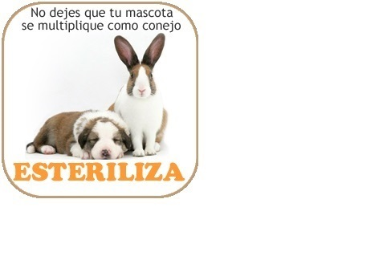
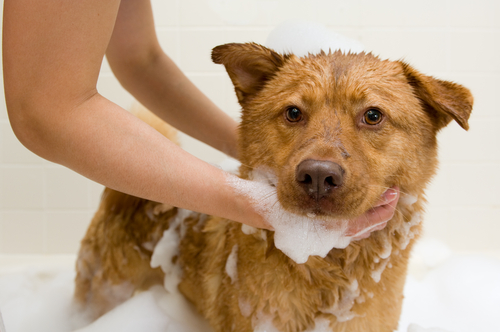
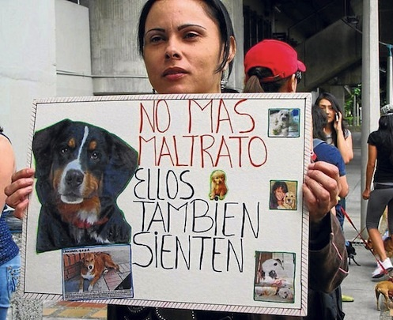
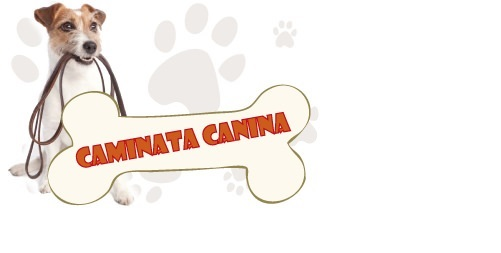

La Alcaldía de Medellín ha dispuesto el servicio gratuito de esterilización de mascotas para contribuir entre todos a la disminución del abandono, el maltrato y la propagación de enfermedades.
A continuación te explicamos cómo acceder al servicio.
Ser residente del municipio de Medellín.
Pertenecer a los estratos 1, 2 o 3, o a los niveles del Sisbén 1, 2 o 3.
Solo se esterilizan hembras mayores de 5 meses y menores de 7 años.
Inscribirse a través de la línea 444 41 44 ( opción 2 ) con la información requerida para ingresar a la lista de espera.
Esperar a que le sea notificada la fecha y el lugar de la jornada.
Es importante no faltar cuando sea citado ya que su turno será asignado a otra persona.
Jornadas de baño

Nos reunimos todos los lideres y voluntarios para realizar jornadas gratuitas de baño en albergues y hogares de paso de la ciudad, con la ayuda de una es estilista canina y felina la cual dona su trabajo de peluqueria,tambien tomamos fotos para que luego puedan ser difundidas y lograr que muchas personas se enamoren de la originalidad de estos perros y gatos, para mayor información o si deseas asistir escribenos a fundacionpatitasdecorazon@gmail.com.
Marcha Contra el Maltrato Animal

Se realiza en Medellín la tercera gran marcha contra el maltrato animal, convocada por la Fundación Orca, que trabaja en la defensa de los animales en Medellín, comenzará a las nueve de la mañana el día 15 de mayo de este año. Se espera una asistencia muy superior a la del año anterior, cuando se recogieron más de mil firmas que pedían una reforma a la Ley 84 de 1989, que pretende castigar a quienes atentan contra los animales, pero con penas como por ejemplo, imponer multas de 5 mil a 100 mil pesos, o penas de 15 días a 6 meses excarcelables a quien maltrate o asesine un animal. La asistencia es libre y se pueden llevar mascotas, pero no es obligación. Se recomienda llevar elementos para recoger los excrementos de los animales. La marcha no es antitaurina, sino contra toda forma de maltrato animal, dentro de lo cual, cabe la denominada fiesta brava.
Caminata Canina y de Mascotas

La Caminata Canina y de Mascotas promueve muy especialmente el buen trato, el cuidado y la protección de los animales, por eso se prohíbe llevar fauna silvestre u otros animales que no sean domésticos. Para información sobre fecha y hora de las caminatas escribenos a fundacionpatitasdecorazon@gmail.com.
Se han establecido algunas recomendaciones importantes para tener en cuenta:
La hidratación de las mascotas es fundamental, por eso además de los puestos de hidratación dispuestos para el evento es necesario que lleven agua con sus respectivos recipientes para suministrársela frecuentemente.
Todas las mascotas deben asistir con traílla y si tienen placa de identificación deben portarla ese día.
Las mascotas agresivas o de temperamento fuerte deben ser llevadas con bozal y traílla.
Los cachorros que aún no han sido vacunados o no se les ha completado su esquema de vacunación no deben asistir a la Caminata.
No se recomienda llevar a las mascotas disfrazadas para evitar el exceso de calor y la incomodidad que estos atuendos les pueda causar.
Para el cuidado de los propietarios, es importante que usen gorras o sombreros para protegerse del sol y apliquen bloqueador solar antes de iniciar y durante el recorrido, además de llevar agua para que se hidraten oportunamente.